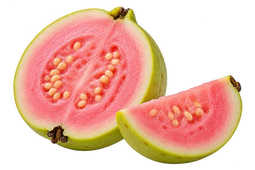
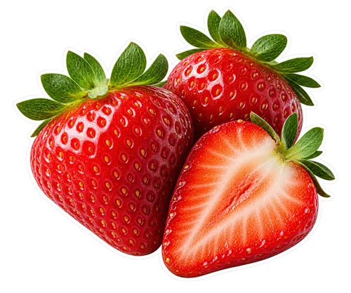

What you will need
Yield: 2 small glasses (about 2 cups). Final volume changes with fruit, straining, and liquid adjustments.

½ cup unsweetened seedless guava pulp (about 120 g)
1 cup hulled strawberries (about 140 g), fresh or frozen- ½ cup plain yogurt (about 120 g)
- ½ cup cold water (120 ml), plus more as needed
- Optional: 1 teaspoon honey or maple syrup, to taste
How to make it
Measure unsweetened seedless guava pulp. If using a frozen product, follow its thawing and handling directions so you can measure a manageable portion.
Wash fresh strawberries under running water and remove their leafy tops. Measure the prepared berries. For frozen strawberries, follow the package and blender instructions.
Add water and yogurt to the blender first, then guava pulp and strawberries. Blend until smooth, stopping the machine before scraping down the sides if necessary.
Taste before adding optional sweetener. Add water a tablespoon at a time if the mixture is thicker than you want, and blend briefly after each small adjustment.
Pour into two small glasses and serve promptly. The color can be pale pink or deeper rose depending on the guava pulp and the berries.
Start with pulp, not guava paste
The recipe is written for unsweetened fruit pulp. Guava paste is a different concentrated, often sweetened product, and guava nectar is a beverage with a different liquid balance. Neither is a direct swap for the measured pulp. Goya’s guava pulp page describes a frozen no-added-sugar product, which is one example of the ingredient form to look for. You can use another brand with a suitable label. Check what is actually inside the package rather than choosing only by the word guava on the front.
Use fresh guava with an extra preparation step
If starting with ripe fresh guava, wash the fruit and prepare the soft flesh, removing the hard seed-containing center as needed. For a smooth pulp, pass the prepared soft fruit through a fine sieve and measure ½ cup of the resulting seedless material. Do not simply add a whole guava with hard seeds and expect repeated blending to make the same texture. The number of fresh fruits needed will vary with size and the amount discarded. This is why the recipe measures finished pulp rather than giving a universal whole-fruit count.
Pink and white guava will look different
The photograph shows a pink-guava version. If your suitable seedless pulp is pale or white, the strawberries will contribute more of the visible color and the finished smoothie may look different. That does not require adding coloring or extra berries solely to imitate a photograph. Taste the prepared fruit and decide whether the combination works for you. Use the same measured starting quantities, then adjust one ingredient at a time. Generated drink imagery helps show the serving idea; it is not proof that every guava variety will produce an identical glass.
Measure strawberries after removing the tops
For fresh berries, rinse under running water and remove the leafy tops before measuring. Halve large berries if that helps them fit your blender. The approximate 140 g weight is a second starting measure, not a promise that every cup of berries packs identically. If using frozen berries, check whether they are plain fruit or part of a sweetened mixture. You may not need extra ice with frozen fruit. Begin with the written liquid amount and adjust the texture based on the fruit you are using rather than doubling the water automatically.
Keep the yogurt choice simple
Plain yogurt gives you a creamy base while leaving the fruit and sweetness choices visible. A sweetened strawberry yogurt adds another ingredient profile and may make the optional sweetener unnecessary. Thick yogurt can require a little more water than a pourable one. For a dairy-free first trial, use ½ cup plain plant-based yogurt, starting with ¼ cup water and adding more until the mixture blends comfortably. Check ingredient labels for dietary requirements and allergens. We do not present these different products as nutritionally interchangeable or attach an unsupported exact nutrient total to the glass.
Choose which fruit you want to emphasize
Make the measured blend first. If you want guava to be more noticeable, try adding a tablespoon of guava pulp to a small portion of the finished smoothie and taste before changing the whole batch. If you want a stronger strawberry direction, try a few more prepared berries. More fruit can also change thickness, so check liquid only after the flavor adjustment. A tiny note about the guava and strawberry amounts helps you repeat your favorite version. You do not need several extra fruits to make this two-fruit blend feel interesting.
Fix texture before adding unnecessary sweetness
If the blend is too thick to pour, add water by the tablespoon. If too thin, a little more fruit pulp or thick yogurt is a more targeted adjustment than a large amount of ice. If the fruit is tart, decide whether you want more yogurt, sweeter berries on the next batch, or the optional teaspoon of sweetener. Graininess from guava seeds needs a preparation change, not extra sugar. Strain the guava material properly before the next blend. Keep sweetness and texture as separate decisions so you can understand what each adjustment did.
Make a one-glass version
For one small glass, use ¼ cup guava pulp, ½ cup hulled strawberries, ¼ cup yogurt, and ¼ cup water. Keep the optional sweetener to a small taste adjustment. For four small glasses, use 1 cup guava pulp, 2 cups strawberries, 1 cup yogurt, and 1 cup water. If that volume crowds your blender, make two batches. Small portions are particularly useful when opening a new guava product, because you can learn its flavor and texture before committing the whole packet to a combination you have not tried.
Serve the pink smoothie with useful simplicity
A clear glass shows the color, but any suitable cup works. For a small garnish, use a washed strawberry on the side rather than leaving hard guava seeds in the blend for decoration. A green napkin or coaster can echo the fruit sticker palette without putting unnecessary ingredients into the drink. Pour close to serving for the texture you prefer. If you save a portion, keep it covered and refrigerated promptly and stir before serving; a little settling should not be mistaken for a reason to keep it sitting at room temperature.
Plan the next use for an opened pulp packet
Read the package’s storage instructions and portion the unused pulp accordingly. Label a saved portion with the fruit name so it is not mistaken for a sweetened sauce later. Keep the strawberries and yogurt separate until you decide on another batch. If you enjoy the guava but want a gentler fruit pairing, try a separate small sample with less strawberry rather than automatically changing the whole recipe. This is also a useful moment to visit our smoothie-without-banana guide, where substitutions are organized by the role an ingredient plays in the blend.
Serving and keeping a portion
Prepare a small batch close to serving for the texture and temperature you enjoy. If saving some, cover and refrigerate promptly. Stir before serving and use any opened packaged ingredients according to their labels. Citrus and ginger do not make a homemade drink shelf-stable. Keep utensils and containers clean and handle cut produce and dairy or plant-based ingredients with care.
FoodSafety.gov recommends refrigerating perishable food within two hours, or one hour above 90°F, and keeping the refrigerator at 40°F or below.
Questions before you begin
Can I use bottled guava nectar?
Nectar is not the measured pulp ingredient. It changes both liquid and sweetness, so use a smaller trial and reduce the added water if experimenting rather than treating it as a one-for-one swap.
Does this recipe need banana?
No. The measured recipe uses guava, strawberries, yogurt, and water. It is written to keep those fruit flavors clear.
Why is my smoothie a different shade of pink?
Guava variety, berries, yogurt, and dilution all affect appearance. Choose the flavor and texture you enjoy rather than using the generated photograph as an exact color requirement.
Preparation sources and recipe standards
These sources support specific ingredient forms and preparation choices. They do not establish kitchen testing of this recipe or health effects of the finished drink.
We use AI-generated photography-style images and ingredient cutouts. Actual appearance varies with ingredients and preparation. We do not describe this recipe as kitchen-tested. Read our recipe standards, and share a specific correction if a quantity or preparation step needs attention.